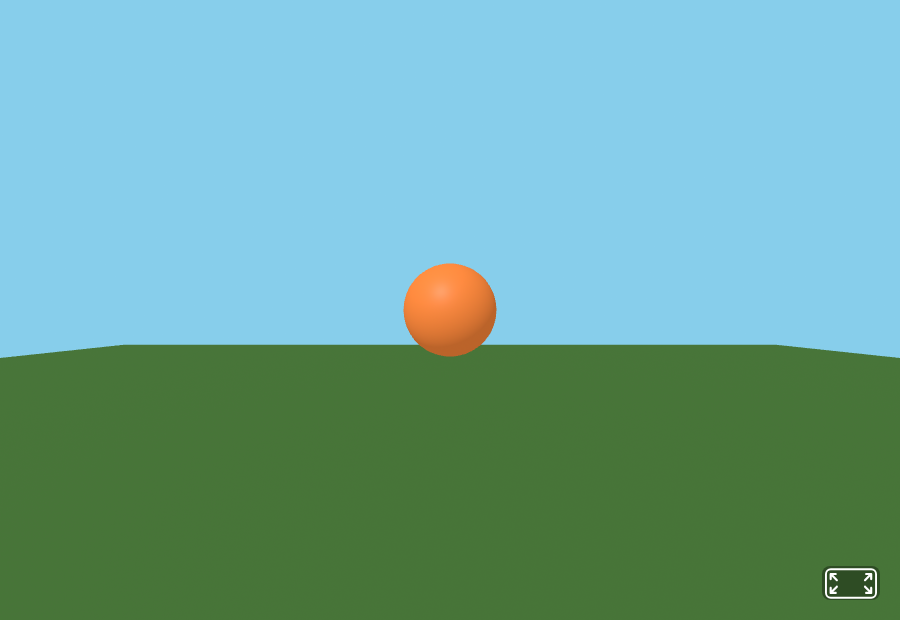
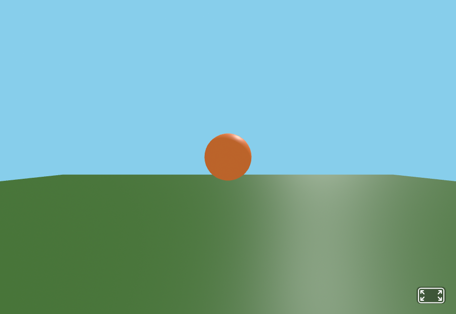
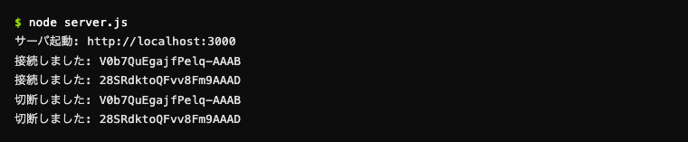

まず丸ごと動かして、確かめる ― 理屈はあとで
先に「動く」を確かめよう。今日の要点はサーバを止めても消えないこと
ここで確かめるのは 「自分たちが歩いた動きが、logs.db に1行ずつ溜まっていく」こと。溜まったログを CSV で取り出して pandas で分析するのは節4以降。第4回と同じく、まずは中身を気にせずそのままコピペして動かし、結果を先に見る。このあと節3でコインと当たり判定を自分の手で足していく。
やること（4ステップ）
- 下の2ファイルをそのままコピペして保存する（穴埋めなし・完成版）
node server.js→http://localhost:3000を2つの窓で開き、WASDキーで歩き回る- VS Code で
logs.dbをクリックして開く → Refresh を押すたびに、行がどんどん増えていく - ターミナルで
Ctrl + C→ もう一度node server.js→logs.dbの行が消えていないことを確認する
📁 どこに作るか
ファイル1: server.js（md2_no5 の直下）── そのままコピペ
第4回の server.js に、データベースを開く・表を作る・1行ずつ書き込むを足しただけ。ここでは「溜める」だけ。CSVで取り出すのは節4で、そちらはコードを書かずボタン1つでできる。
JavaScript ── server.jsconst express = require('express'); const socketIo = require('socket.io'); const Database = require('better-sqlite3'); const app = express(); app.use(express.static('public')); const server = app.listen(3000, () => { console.log('サーバ起動: http://localhost:3000'); }); const io = socketIo(server); // データベースを開く（無ければ logs.db が作られる） const db = new Database('logs.db'); // ログを溜める表を作る（1行 = 行動データ1件） db.exec(` CREATE TABLE IF NOT EXISTS logs ( id INTEGER PRIMARY KEY AUTOINCREMENT, user_id TEXT, t INTEGER, event TEXT, x REAL, y REAL, z REAL ) `); // 1行を書き込む命令を、あらかじめ用意しておく const insertLog = db.prepare( 'INSERT INTO logs (user_id, t, event, x, y, z) VALUES (?, ?, ?, ?, ?, ?)' ); io.on('connection', (socket) => { console.log('接続しました:', socket.id); insertLog.run(socket.id, Date.now(), 'join', 0, 0, 0); // 動いたら「記録してから」転送する socket.on('move', (data) => { insertLog.run(socket.id, Date.now(), 'move', data.position.x, data.position.y, data.position.z); socket.broadcast.emit('moved', { id: socket.id, position: data.position }); }); socket.on('disconnect', () => { console.log('切断しました:', socket.id); insertLog.run(socket.id, Date.now(), 'leave', 0, 0, 0); io.emit('userLeft', socket.id); }); });
ファイル2: public/index.html ── 完成版・そのままコピペ
第4回の index.html とほぼ同じ。100ミリ秒ごとに自分の位置を送るだけ。
HTML ── public/index.html<!DOCTYPE html> <html lang="ja"><head> <meta charset="UTF-8"><title>ログを取る空間</title> <script src="https://aframe.io/releases/1.7.1/aframe.min.js"></script> <script src="/socket.io/socket.io.js"></script> </head><body> <a-scene id="scene"> <a-plane rotation="-90 0 0" width="30" height="30" color="#4a7a3a"></a-plane> <a-sky color="#87CEEB"></a-sky> <a-camera id="cam" position="0 1.6 4"></a-camera> </a-scene> <script> const socket = io(); const scene = document.getElementById('scene'); const cam = document.getElementById('cam'); // 100ミリ秒ごとに、自分の位置をサーバへ送る setInterval(() => { const pos = cam.object3D.position; socket.emit('move', { position: { x: pos.x, y: pos.y, z: pos.z } }); }, 100); // 相手のアバター（スフィア）を作る function createAvatar(id) { const avatar = document.createElement('a-sphere'); avatar.setAttribute('id', id); avatar.setAttribute('radius', '0.5'); avatar.setAttribute('color', '#FF8A3D'); scene.appendChild(avatar); return avatar; } socket.on('moved', (data) => { let avatar = document.getElementById(data.id); if (!avatar) avatar = createAvatar(data.id); avatar.setAttribute('position', data.position); }); socket.on('userLeft', (id) => { const avatar = document.getElementById(id); if (avatar) avatar.parentNode.removeChild(avatar); }); </script> </body></html>
動かす
Terminal# md2_no5 の中で実行（このターミナルは開いたまま） node server.js
http://localhost:3000 を2つの窓で開き、WASDキーで歩き回る。相手のスフィアが動くのが見える。ターミナルには接続・切断のログが流れる。



接続しました／切断しました が流れる。これは画面に出しているだけ。同時に、裏では move が logs.db に1行ずつ書かれている。logs.db を開いて、溜まっていくのを見る
logs.db はそのまま開いても文字化けして読めない（人間用のテキストではないため）。VS Code の拡張機能を入れると、Excelのような表で中身を確認できる。毎回コードを書かずに「ちゃんと溜まっているか」を目で見られるので、必ず入れておく。
- VS Code 左の拡張機能（四角が4つのアイコン）を開く
- 検索欄に
dbと打ち、DB Viewer（MJ Studio）をインストール - あとで
logs.dbをクリックすると、表形式で中身が開くようになる

db と検索 → DB Viewer（MJ Studio）をインストール。似た名前が並ぶので、作者名で見分ける。
Export CSV でCSVに書き出すこともできる。（図は別のDBの例）サーバを動かしたまま、VS Code の md2_no5 に logs.db が自動で作られているのを確認する。クリックすると DB Viewer が表で開く。歩きながら Refresh を押すと、行がどんどん増えていく（1人につき毎秒10行ずつ）。
見かた
- 左の Tables に
logsがある。クリックすると中身が表で出る - 右上の Refresh を押すと最新になる（自動では増えない）
eventがjoin（入室）とmove（移動）の行が並んでいれば成功
確認：サーバを止めて、もう一度立ち上げてみよう
ターミナルで Ctrl + C を押してサーバを止める。そしてもう一度 node server.js で起動し、logs.db の Refresh を押す。
- 第4回まで：サーバを止めた瞬間、すべて消えていた（メモリ＝机の上）
- 今日：行はそのまま残っている。さっき歩いた記録が、
logs.dbというファイルに焼き付いているから
これが「永続化」。データがプログラムの寿命より長く残るようになった、ということ。ここが第4回との違い。
動かないときのチェック
Cannot find module 'better-sqlite3'：npm install better-sqlite3をmd2_no5の中で実行したか確認するlogs.dbが見あたらない：サーバを1回でも起動したか確認する（node server.jsの起動時に自動で作られる）- 行が増えない：3D空間の窓を開いたままにして、Refresh を押したか確認する（閉じると
moveの送信も止まる）